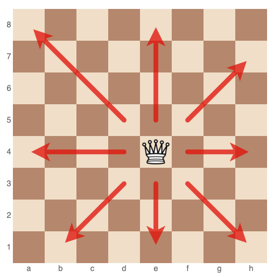

The Rules of Chess:
- The game is played on a square chessboard, with each player starting with 16 pieces: one king, one queen, two rooks, two knights, two bishops, and eight pawns.
- The goal of the game is to checkmate your opponent's king, which means the king is in a position to be captured (in "check") and there is no way to move the king out of capture (mate).
- Each player starts the game with their pieces arranged in a particular way on the board, with the white player going first.
- Players take turns making moves with one of their pieces. A move consists of either moving a piece to a new square on the board, or capturing an opponent's piece by moving to the square it occupies.
- The king is the most important piece, and it is the goal of the game to protect your king while trying to capture your opponent's king.
- The queen is the most powerful piece and can move in any direction along the rows, columns, or diagonals of the board.

- Rooks can move in a straight line along any row or column.
- Knights can move in an "L" shape: two squares horizontally or vertically, and then one square perpendicular to that. They are the only pieces that can "jump" over other pieces.
- Bishops can move diagonally in any direction. Each player starts with two bishops, one on a white square and one on a black square.
- Pawns are the weakest pieces, but they have the potential to become more powerful if they reach the other side of the board. Pawns can only move forward, but they capture pieces differently than they move. They capture diagonally, one square forward and one square to the left or right. They can also move two squares forward on their first move.
- If a pawn reaches the other side of the board, it can be "promoted" to any piece of the player's choice, except for a king.
- If a player's king is in check and the player has no legal moves that can remove the king from check, the player is in checkmate and loses the game.
- If a player is not in checkmate but has no legal moves, the game is a draw, or a tie.

- There are several other ways a game can end in a draw, including if the same position is repeated three times with the same player to move, or if there are not enough pieces on the board to force checkmate (for example, if a player only has a king and bishop left).